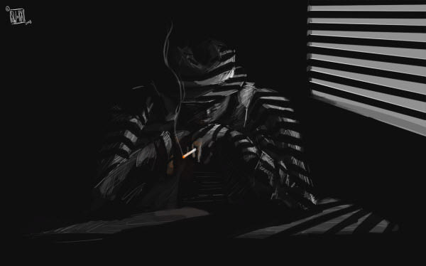

About Me

Hello!
My name is John Bostater and this is my website.
I am self taught developer and I am currently studying Cybersecurity (Computer Science) at Arizona State University.
I love learning about both developing software as well as setting up protections for it.
I have found a deep love for computers to where I can lose track behind a keyboard and develop for hours.
Accolades
Arizona State University
B.S. Computer Science (Cybersecurity)
August 2022 - December 2025
Saint Clair County Community College (SC4)

Associate of Science
August 2019 - May 2022
Personal Projects
While I found programming later in life I have been extremely adamant in my learning.
I have completed courses in Data Structures and Algorithms and try to implement object orientation
and other relevant programming principles in my program